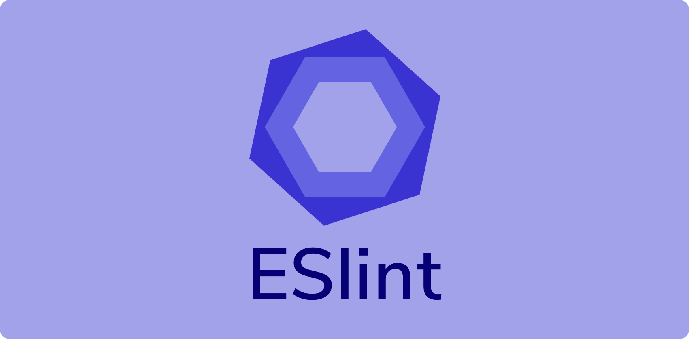

In the world of software development, coding standards are often overlooked as mere nitpicking about indentation and brace placement. However, they are far more than superficial guidelines; coding standards are the linchpin of code quality, maintainability, and the learning process. In this essay, we will explore the true significance of coding standards, their role in enhancing software engineering techniques, and my initial impressions of using ESLint with IntelliJ during the first week.
Coding standards are not just about aesthetics; they are about maintaining consistency and clarity in code. They serve as a foundation for several critical aspects of software development.
Coding standards act as a quality assurance mechanism. Code that adheres to these standards is less prone to errors, making it easier to identify and rectify bugs. Inconsistent code formatting and style can lead to confusion and costly maintenance in the long run.
Well-defined coding standards significantly contribute to code maintainability. When developers need to work on code written by others, adhering to these standards ensures they can quickly understand the code’s structure and logic. This reduces the learning curve and minimizes the chances of introducing new errors during maintenance.
In a team environment, coding standards are essential for effective collaboration. They provide a common framework, ensuring that all team members write code in a uniform manner. This makes it easier to review, integrate, and troubleshoot each other’s work, leading to a more cohesive and productive development environment.
Contrary to popular belief, coding standards are not just for experienced developers; they are a powerful learning tool for beginners as well. When newcomers adhere to coding standards, they not only produce more readable code but also absorb essential programming language concepts more effectively.
Coding standards introduce beginners to consistent code structure and formatting. This consistency reduces cognitive load and allows learners to focus on understanding the syntax and semantics of a programming language.
Coding standards often encapsulate best practices. By following these standards, beginners are exposed to industry-approved coding techniques from the beginning. This sets a strong foundation and ensures that they start their programming journey on the right track.
After my first week of using ESLint with IntelliJ, I have found it to be both beneficial and enlightening.
Painful but Necessary: ESLint can be initially painful, with a barrage of warnings and errors. However, this discomfort is a necessary step in the learning process. It forces developers to confront and rectify code issues they might otherwise overlook.
Useful and Informative: ESLint’s green checkmark is more than a symbol; it signifies code quality and adherence to standards. It serves as a visual indicator of a job well done. Furthermore, ESLint’s detailed error messages provide valuable insights into coding mistakes and offer opportunities for improvement.
In conclusion, coding standards are not to be underestimated. They are the foundation upon which code quality, maintainability, and effective learning are built. Whether you are a beginner or an experienced developer, adhering to coding standards is a crucial step toward producing reliable, maintainable, and bug-free code.
ESLint with IntelliJ, while initially challenging, offers a valuable tool to enforce coding standards and enhance code quality. The slight discomfort it brings is a worthwhile investment, ultimately leading to code that is more reliable, maintainable, and comprehensible. As a software developer, I wholeheartedly agree that if you can only implement one software engineering technique to improve quality, it should indeed be coding standards. They are the silent architects of robust, readable, and bug-free code, guiding developers toward excellence in their craft.